Finite Element Neural Network Interpolation: Hybridisation with the Proper Generalised Decomposition for Surrogate Modelling
GDR I-GAIA Week 2026
November 16, 2026
Why a lung digital twin ?
Objectives
See Martin’s talk on Wednesday at the plenary session
Improved understanding of the mechanically-driven physiological mechanisms
In silico prognostics
- Transfer tools to the clinic
- Patient-specific digital twins
Requirements
- Mechanical model of the lung (Patte et al., 2022; Peyraut & Genet, 2024)
- Uncertainty quantification (Laville et al., 2023; Peyraut & Genet, 2025)
- Real-time estimation of the parameters
Lung poro-mechanics (Patte et al., 2022).
\[ \definecolor{Violet}{RGB}{162, 32, 185} \definecolor{Teal}{RGB}{0, 103, 127} \definecolor{Blue}{RGB}{58, 70, 245} \definecolor{Green}{RGB}{0,103,127} \definecolor{LGreen}{RGB}{62,128,102} \definecolor{red}{RGB}{206,0,55} \]
Weak formulation :
\[ \begin{cases} \int_{\Omega} \boldsymbol{\Sigma} : d_{\boldsymbol{u}}\boldsymbol{E}\left( \boldsymbol{u^*} \right) ~\mathrm{d}\Omega= W_{\text{ext}}\left(\boldsymbol{u},\boldsymbol{u^*}\right) ~\forall \boldsymbol{u^*} \in H^1_0\left(\Omega \right) \\[4mm] \int_{\Omega} \left(pf + \frac{\partial \Psi \left(\boldsymbol{u},\Phi_f\right)}{\partial \Phi_s}\right) \Phi_f^* ~\mathrm{d}\Omega= 0 ~\forall \Phi_f^* \end{cases} \label{eq:MechPb_lung} \]
Kinematics:
- \(\boldsymbol{F} = \boldsymbol{1} + \boldsymbol{\nabla}\boldsymbol{u}\) - deformation gradient
- \(\boldsymbol{C} = \boldsymbol{F}^T \cdot \boldsymbol{F}\) - right Cauchy-Green tensor
- \(\boldsymbol{E} = \frac{1}{2}\left(\boldsymbol{C} -\boldsymbol{1} \right)\) - Green-Lagrange tensor
- \(I_1 = \text{tr}\left(\boldsymbol{C} \right)\) - first invariant of \(\boldsymbol{C}\)
- \(I_2 = \frac{1}{2} \left(\text{tr}\left(\boldsymbol{C} \right)^2 - \text{tr}\left( \boldsymbol{C}^2 \right) \right)\)
Behaviour
- \(\boldsymbol{\Sigma} = \frac{\partial \Psi_s + \Psi_f}{\partial \boldsymbol{E}} = \frac{\partial \Psi_s }{\partial \boldsymbol{E}} + p_f J \boldsymbol{C}^{-1}\) - The second Piola-Kirchhoff stress tensor
- \(p_f = -\frac{\partial \Psi_s}{\partial \Phi_s}\) - fluid pressure
- \(\Psi_s\left(\boldsymbol{E}, \Phi_s \right) = W_{\text{skel}} + W_{\text{bulk}}\) \[\begin{cases} W_{\text{skel}} = \beta_1\left(I_1 - \text{tr}\left(I_d\right) -2 \text{ln}\left(\mathrm{det}\left(\boldsymbol{F} \right)\right)\right) + \beta_2 \left(I_2 -3 -4\text{ln}\left(\mathrm{det}\left(\boldsymbol{F} \right)\right)\right) + \alpha \left( e^{\delta\left(\mathrm{det}\left(\boldsymbol{F} \right)^2-1-2\text{ln}\left(\mathrm{det}\left(\boldsymbol{F} \right)\right) \right)} -1\right)\\ W_{\text{bulk}} = \kappa \left( \frac{\Phi_s}{1-\Phi_{f0}} -1 -\text{ln}\left( \frac{\Phi_s}{1-\Phi_{f0}}\right) \right) \end{cases}\]
- \(\Phi_s\) current volume fraction of solid pulled back on the reference configurations
Simpler mechanical problem - surrogate modelling
- Parametrised (patient-specific) mechanical problem
\[ \boldsymbol{u} = \mathop{\mathrm{arg\,min}}_{H^1\left(\Omega \right)} \int_{\Omega} \Psi\left( \boldsymbol{E}\left(\boldsymbol{u}\left(\textcolor{Blue}{\boldsymbol{x}}, \textcolor{LGreen}{\left\{\mu_i\right\}_{i \in \mathopen{~[\!\![~}1, \beta \mathclose{~]\!\!]}}}\right)\right) \right) ~\mathrm{d}\Omega- W_{\text{ext}}\left(\textcolor{Blue}{\boldsymbol{x}}, \textcolor{LGreen}{\left\{\mu_i\right\}_{i \in \mathopen{~[\!\![~}1, \beta \mathclose{~]\!\!]}}}\right) \]
Kinematics:
- \(\boldsymbol{F} = \boldsymbol{1} + \boldsymbol{\nabla}\boldsymbol{u}\) - deformation gradient
- \(\boldsymbol{C} = \boldsymbol{F}^T \cdot \boldsymbol{F}\) - right Cauchy-Green tensor
- \(\boldsymbol{E} = \frac{1}{2}\left(\boldsymbol{C} -\boldsymbol{1} \right)\) - Green-Lagrange tensor
- \(I_1 = \text{tr}\left(\boldsymbol{C} \right)\) - first invariant of \(\boldsymbol{C}\)
Behaviour - Saint Venant-Kirchhoff
\(\Psi = \frac{\lambda}{2} \text{tr}\left(\boldsymbol{E}\right)^2 + \mu \boldsymbol{E}:\boldsymbol{E}\)
- Unstable under compression
- \(\nu = 0.49\) for quasi-incompressibility
- Soft tissues are often modelled as incompressible materials
Reduced-order model (ROM)
- Build a surrogate model
- Parametrised solution \(\boldsymbol{u}\left(\textcolor{Blue}{\boldsymbol{x}}, \textcolor{LGreen}{\left\{\mu_i\right\}_{i \in \mathopen{~[\!\![~}1, \beta \mathclose{~]\!\!]}}}\right)\)
- In modern terms, we want to learn a displacement field operator \(\textcolor{LGreen}{\left\{\mu_i\right\}_{i \in \mathopen{~[\!\![~}1, \beta \mathclose{~]\!\!]}}} \mapsto \boldsymbol{u}\left(\textcolor{Blue}{\cdot}, \textcolor{LGreen}{\left\{\mu_i\right\}_{i \in \mathopen{~[\!\![~}1, \beta \mathclose{~]\!\!]}}}\right)\)
- No computations online
- On the fly evaluation of the model
- Real-time parameters estimation
Outline
|
|
|
|
Interpolation of the solution
- FEM finite admissible space
\[ \mathcal{U}_h = \left\{\boldsymbol{u}_h \; | \; \boldsymbol{u}_h \in \text{Span}\left( \left\{ N_i^{\Omega}\left(\boldsymbol{x} \right)\right\}_{i \in \mathopen{~[\!\![~}1,N\mathclose{~]\!\!]}} \right)^d \text{, } \boldsymbol{u}_h = \boldsymbol{u}_d \text{ on }\partial \Omega_d \right\} \]
- Interpretabilty
- Kronecker property
- Easy to prescribe Dirichlet boundary conditions
- Mesh adaptation not directly embedded in the method
- Fully connected Neural Networks (e.g., PINNS)
\[ \boldsymbol{u} \left(x_{0,0,0} \right) = \sum\limits_{i = 0}^C \sum\limits_{j = 0}^{N_i} \sigma \left( \sum\limits_{k = 0}^{M_{i,j}} b_{i,j}+\omega_{i,j,k}~ x_{i,j,k} \right) \]
- All interpolation parameters are trainable
- Benefits from ML developments
- Not easily interpretable
- Difficult to prescribe Dirichlet boundary conditions
- HiDeNN framework (Liu et al., 2023; Park et al., 2023; Zhang et al., 2021)
- Best of both worlds
- Reproducing FEM interpolation with constrained sparse neural networks
- \(N_i^{\Omega}\) are SNN with constrained weights and biases
- Fully interpretable parameters
- Continuous interpolated field that can be automatically differentiated
- Runs on GPUs
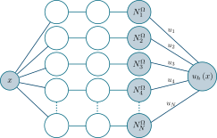
Solving the mechanical problem (Škardová et al., 2025).
Solving the mechanical problems amounts to finding the continuous displacement field minimising the potential energy \[E_p\left(\boldsymbol{u}\right) = \int_{\Omega}\Psi\left(\boldsymbol{E}\left(\boldsymbol{u}\right)\right) ~\mathrm{d}\Omega- \int_{\partial \Omega_N}\boldsymbol{F}\cdot \boldsymbol{u} ~\mathrm{d}A- \int_{\Omega}\boldsymbol{f}\cdot\boldsymbol{u}~\mathrm{d}\Omega, \qquad \text{e.g. SVK: } \Psi = \frac{1}{2}\boldsymbol{E} : \mathbb{C} : \boldsymbol{E} \]
In practice
- Compute the loss \(\mathcal{L} := E_p\)
- Find the parameters minimising the loss
- Rely on state-of-the-art optimizers (ADAM, LBFGS, etc.)
Degrees of freedom (Dofs)
- Nodal values (standard FEM Dofs)
- Nodal coordinates (Mesh adaptation)
- hr-adaptivity
Reduced-order modelling (ROM)
Low-rank approximation of the solution to avoid the curse of dimensionality with \(\beta\) parameters
Full-order discretised model
- \(N\) spatial shape functions
- Span a finite spatial space of dimension \(N\)
- Requires computing \(N\times \beta\) associated parametric functions
Reduced-order model
- \(m \ll N\) spatial modes
- Similar to global shape functions
- Span a smaller space
- Galerkin projection
Finding the reduced-order basis - mostly from previous expensive computations
- Linear Normal Modes (eigenmodes of the structure) (Hansteen & Bell, 1979)
- Do not account for the loading and behaviour specifics
- Proper Orthogonal Decomposition (Chatterjee, 2000; Radermacher & Reese, 2013)
- Require wise selection of the snapshots and costly computations
- Reduced basis method (Maday & Rønquist, 2002) with EIM (Barrault et al., 2004)
- Rely on prior expensive computations
- Auto-encoders for non-linear ROM (Tomasetto et al., 2025)
- Also relies previously generated data/snapshots
- A priori ROM methods relying only on the PDEs
- such as the PGD
Proper Generalised Decomposition (PGD)
- Proper Generalised Decomposition (PGD) : (Chinesta et al., 2011; Ladeveze, 1985)
Tensor Decomposition
- \(\textcolor{LGreen}{\textcolor{LGreen}{\left\{\mu_i\right\}_{i \in \mathopen{~[\!\![~}1, \beta \mathclose{~]\!\!]}}}}\) parameters (material, shape, loading, etc.)
- Curse of dimensionality
\[ \textcolor{VioletLMS_2}{\boldsymbol{u}}\left(\textcolor{Blue}{\boldsymbol{x}}, \textcolor{LGreen}{\left\{\mu_i\right\}_{i \in \mathopen{~[\!\![~}1, \beta \mathclose{~]\!\!]}}}\right)\]
Discretised problem
- \(\textcolor{VioletLMS_2}{N\times\prod\limits_{j=1}^{~\beta} N_{\mu}^j}\) unknowns
- e.g. \(\textcolor{VioletLMS_2}{10000 \times 1000^2 = 10^{10}}\)
Proper Generalised Decomposition (PGD)
- Proper Generalised Decomposition (PGD) : (Chinesta et al., 2011; Ladeveze, 1985)
Tensor Decomposition
- \(\textcolor{LGreen}{\textcolor{LGreen}{\left\{\mu_i\right\}_{i \in \mathopen{~[\!\![~}1, \beta \mathclose{~]\!\!]}}}}\) parameters (material, shape, loading, etc.)
- Curse of dimensionality
\[ \textcolor{VioletLMS_2}{\boldsymbol{u}}\left(\textcolor{Blue}{\boldsymbol{x}}, \textcolor{LGreen}{\left\{\mu_i\right\}_{i \in \mathopen{~[\!\![~}1, \beta \mathclose{~]\!\!]}}}\right) = \sum\limits_{i=1}^m \textcolor{Blue}{\overline{\boldsymbol{u}}_i(\boldsymbol{x})} ~\textcolor{LGreen}{\prod_{j=1}^{\beta}\lambda_i^j(\mu^j)}\]
- \(\textcolor{Blue}{\overline{\boldsymbol{u}}_i(\boldsymbol{x})}\) space modes
- \(\textcolor{LGreen}{\lambda_i^j(\mu^j)}\) parameter modes
Discretised problem
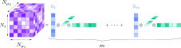
- From \(\textcolor{VioletLMS_2}{N\times\prod\limits_{j=1}^{~\beta} N_{\mu}^j}\) unknowns to \(\textcolor{Blue}{m\times\left(N + \sum\limits_{j=1}^{\beta} N_{\mu}^j\right)}\)
- e.g. \(\textcolor{VioletLMS_2}{10000 \times 1000^2 = 10^{10}} \gg \textcolor{Blue}{ 5\left( 10 000+ 2\times 1000 \right) = 6 \times 10^4}\)
- Finding the tensor decomposition by minimising the energy \[ \left(\left\{\overline{\boldsymbol{u}}_i \right\}_{i\in \mathopen{~[\!\![~}1,m\mathclose{~]\!\!]}},\left\{\lambda_i^j \right\}_{ \begin{cases} i\in \mathopen{~[\!\![~}1,m\mathclose{~]\!\!]}\\ j\in \mathopen{~[\!\![~}1,\beta \mathclose{~]\!\!]} \end{cases} } \right) = \mathop{\mathrm{arg\,min}}_{ \boldsymbol{\theta} ~= \begin{cases} \left(\overline{\boldsymbol{u}}_1, \left\{\overline{\boldsymbol{u}}_i \right\} \right) & \in \mathcal{U}\times \mathcal{U}_0 \\ \left\{\left\{\lambda_i^j \right\}\right\} & \in \left( \bigtimes_{j=1}^{~\beta} \mathcal{L}_2\left(\mathcal{B}_j\right) \right)^{m-1} \end{cases}} ~\underbrace{\int_{\mathcal{B}}\left[E_p\left(\boldsymbol{u}_{\boldsymbol{\theta}}\left(\boldsymbol{x},\left\{\mu_i\right\}_{i \in \mathopen{~[\!\![~}1, \beta \mathclose{~]\!\!]}}\right), \mathbb{C}, \boldsymbol{F}, \boldsymbol{f} \right) \right]\mathrm{d}\beta}_{\mathcal{L}} \label{eq:min_problem} \]
Proper Generalised Decomposition (PGD)
- Building the low-rank tensor decomposition greedily (Ladeveze, 1985; Nouy, 2010)
\[ \boldsymbol{u}_{\theta}\left(\boldsymbol{x}, \left\{\mu_i\right\}_{i \in \mathopen{~[\!\![~}1, \beta \mathclose{~]\!\!]}}\right) = \overline{\boldsymbol{u}}(\boldsymbol{x}) ~\prod_{j=1}^{\beta}\lambda^j(\mu^j) \]
\[ \boldsymbol{u}_{\theta}\left(\boldsymbol{x}, \left\{\mu_i\right\}_{i \in \mathopen{~[\!\![~}1, \beta \mathclose{~]\!\!]}}\right) = \textcolor{red}{\sum\limits_{i=1}^{2}} \overline{\boldsymbol{u}}_{\textcolor{red}{i}}(\boldsymbol{x}) ~\prod_{j=1}^{\beta}\lambda_{\textcolor{red}{i}}^j(\mu^j) \]
\[ \boldsymbol{u}_{\theta}\left(\boldsymbol{x}, \left\{\mu_i\right\}_{i \in \mathopen{~[\!\![~}1, \beta \mathclose{~]\!\!]}}\right) = \sum\limits_{i=1}^{\textcolor{red}{m}} \overline{\boldsymbol{u}}_i(\boldsymbol{x}) ~\prod_{j=1}^{\beta}\lambda_i^j(\mu^j) \]
Greedy algorithm
- Start with a single mode
- Minimise the loss until stagnation
- Add a new mode
- If loss decreases, continue training
- Else stop and return the converged model
The PGD is
- An a priori ROM techniques
- Building the model from scratch on the fly
- No full-order computations
- Reduced-order basis tailored to the specifics of the problem (Daby-Seesaram et al., 2023)
Note - from fixed point to energy landscape exploration
- Classical PGD: fixed point on the \(m\)-th mode \(\rightarrow\) NN-PGD: \(\min\limits_{\boldsymbol{\theta}} \mathcal{L}\left(\boldsymbol{\theta}\right)\) on the full decomposition, explored by automatic differentiation
- The formulation shapes the landscape: (ortho)-normalisation, choice of decomposition, preconditioning
- Online stage: a simple evaluation of the tensor decomposition
Neural Network PGD
Graphical implementation of Neural Network PGD
\[ \boldsymbol{u}_{\theta}\left(\textcolor{Blue}{\boldsymbol{x}}, \textcolor{LGreen}{\left\{\mu_i\right\}_{i \in \mathopen{~[\!\![~}1, \beta \mathclose{~]\!\!]}}}\right) = \sum\limits_{i=1}^m \textcolor{Blue}{\overline{\boldsymbol{u}}_i(\boldsymbol{x})} ~\textcolor{LGreen}{\prod_{j=1}^{\beta}\lambda_i^j(\mu^j)} \]
Interpretable NN-PGD
- No black box
- Fully interpretable implementation
- Great transfer learning capabilities
- Straightforward implementation
- Benefiting from current ML developments
- Straightforward definition of the physical loss using auto-differentiation
- No linearisation by hand, even for non-linear materials and follower loads
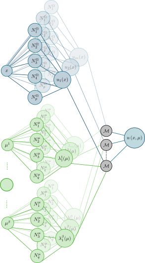
- Space: sparse NN, mesh connectivity, interpretable weights
- Parameters: low-rank, \(10^{12} \to 10^{6}\) values, frugal operators
Non-linear lung digital twin
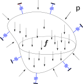
\[ \begin{aligned} \Pi = & \int_{\Omega_0} \Psi_{\text{SVK}}\left(\boldsymbol{E}\right) \mathrm{d}V - \int_{\Omega_0} \boldsymbol{f}\left(\theta, \phi\right) \cdot \boldsymbol{u} \, \mathrm{d}V \\ & + \frac{1}{2}\int_{\partial \Omega_0} k_b \left( \boldsymbol{u}\cdot \boldsymbol{N} \right)^2 \mathrm{d}S - \int_{\Omega_0} p\left(\boldsymbol{X} + \boldsymbol{u}\right) J \, \mathrm{d}V \end{aligned} \]
- 6 parameters: \(E\), \(\left(\theta, \phi\right)\), \(\left(p_0, H, K\right)\)
- Follower pressure \(p = p_0 + H\left(z-z_0 \right) + K\left(y-y_0 \right)\)
- \(\delta \Pi_p = - \int_{\partial \Omega_0} p \, J \boldsymbol{F}^{-T} \boldsymbol{N} \cdot \delta \boldsymbol{u} \, \mathrm{d}S\)
Convergence of the greedy algorithm
Loss convergence
| \(E\) (kPa) | \(p_0\) (kPa) | NN-PGD | Linear FEM |
|---|---|---|---|
| 7.50 | 0.55 | \(2.2 \times 10^{-2}\) | \(1.8 \times 10^{-1}\) |
| 5.65 | 0.22 | \(2.9 \times 10^{-2}\) | \(2.0 \times 10^{-1}\) |
| 8.03 | 0.94 | \(3.5 \times 10^{-2}\) | \(2.4 \times 10^{-1}\) |
| 6.50 | 0.21 | \(1.1 \times 10^{-2}\) | \(4.2 \times 10^{-2}\) |
Geedy algorithm
- Each mode give more room to decrease the energy
- Here, 14 modes give few percent of error
Multi-level training
\[ \boldsymbol{u}^{(\ell)}\left(\textcolor{Blue}{\boldsymbol{x}}, \textcolor{LGreen}{\left\{\mu_i\right\}_{i \in \mathopen{~[\!\![~}1, \beta \mathclose{~]\!\!]}}}\right) = \sum\limits_{i=1}^m \textcolor{Blue}{\Big(\sum\limits_{k} N_k^{(\ell)}(\boldsymbol{x})\, \overline{\boldsymbol{u}}_{i,k}^{(\ell)}\Big)} ~\textcolor{LGreen}{\prod_{j=1}^{\beta}\lambda_i^j(\mu^j)} \]

Level \(\ell \rightarrow \ell+1\)
- Interpretable weights \(=\) nodal values
- Direct initialisation of the new \(\textcolor{Blue}{\boldsymbol{\theta}}\) \[\overline{\boldsymbol{u}}_{i,k}^{(\ell+1)} = \sum\limits_{p} N_p^{(\ell)}\left(\boldsymbol{x}_k^{(\ell+1)}\right) \overline{\boldsymbol{u}}_{i,p}^{(\ell)}\]
- \(\textcolor{LGreen}{\lambda_i^j}\) kept as is
- Coarse (cheap) training, then fine tuning of all modes
- Extends (Giacoma et al., 2015)
Note
- Tensor decomposition structure kept across levels
- Last mode of each level irrelevant by construction: removed before refinement
Conclusion
Conclusion
- Robust and straightforward general implementation of a autodiff-PGD
- Interpretable & sparse
- Benefits from all recent developments in machine learning
- Surrogate modelling of parametrised PDE solution
- Promising results on a non-linear (SVK) lung with 6 parameters
Perspectives for patient-specific applications
- Personalised shape-informed digital-twins
- Katerina Skardova Monday at 6:00 pm
+
Prospective applications
- Digital twin for
- real-time patient-specific simulations
- Diagnostics and prognostics
- Control of medical devices (forced ventilation, etc)
- shape-optimisation (of 3D printed organs, personalised prosthesis, etc.)
- Inexpensive shape derivative of mechanical quantities
- real-time patient-specific simulations


Thank you for your attention
Shape model - from an average shape
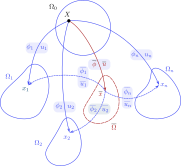
- \(\forall i \in \mathopen{~[\!\![~}1,n\mathclose{~]\!\!]}\)
- \(\boldsymbol{u}_i, \phi_i\left(\boldsymbol{X}\right)\) mappings and transformations on the sphere
- \(\overline{\boldsymbol{u}}_i, \overline{\phi}_i\left(\overline{\boldsymbol{x}}\right)\) mappings and transformations on the average shape
- \(\overline{\Omega}\) The average shape
- \(\overline{\boldsymbol{u}}, \overline{\phi}\left(\overline{\boldsymbol{x}}\right)\) mappings and transformations from sphere to AS
- Kinematics on the average shape \(\overline{\Omega}\)
\[ \begin{align} \underbrace{\boldsymbol{1} + \boldsymbol{\nabla}_{\overline{\boldsymbol{x}}} \overline{\boldsymbol{u}}_i\left(\overline{\boldsymbol{x}}\right)}_{\boldsymbol{\overline{F}}_i} & = \boldsymbol{1} + \boldsymbol{\nabla}_X \left( \boldsymbol{u}_i\left(\boldsymbol{X}\right) - \overline{\boldsymbol{u}}\left(\boldsymbol{X}\right) \right) \boldsymbol{\overline{F}}^{-1} \\ & = \boldsymbol{F}_i \boldsymbol{\overline{F}}^{-1} \\ \end{align}\]
- From there we can compute \[\overline{\Omega} = \text{argmin} \sum\limits_{i=1}^n \int_{\overline{\Omega}} W\left( \boldsymbol{\overline{F}}_i\right)\]
- And then we parametrise the residual mappings \[\overline{u}_i = \overline{u}_i\left(\left\{\mu_i\right\}_{i \in \mathopen{~[\!\![~}1, \beta \mathclose{~]\!\!]}}\right) := u_i - \overline{u}\]
Preliminary results on varying porosity
Varying porosity value changing the geometry of the local RVE.
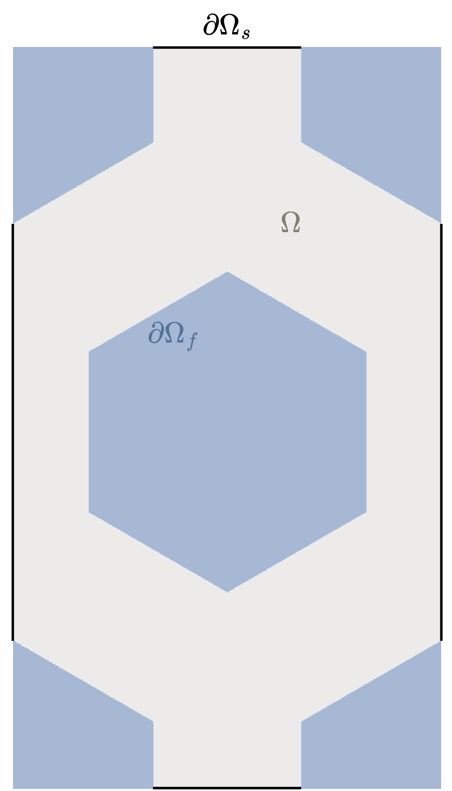
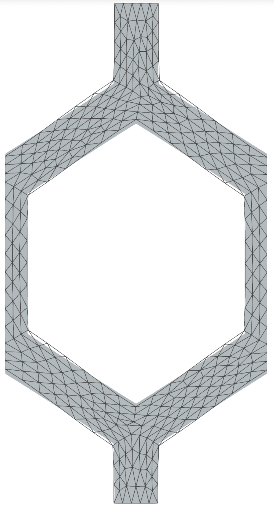
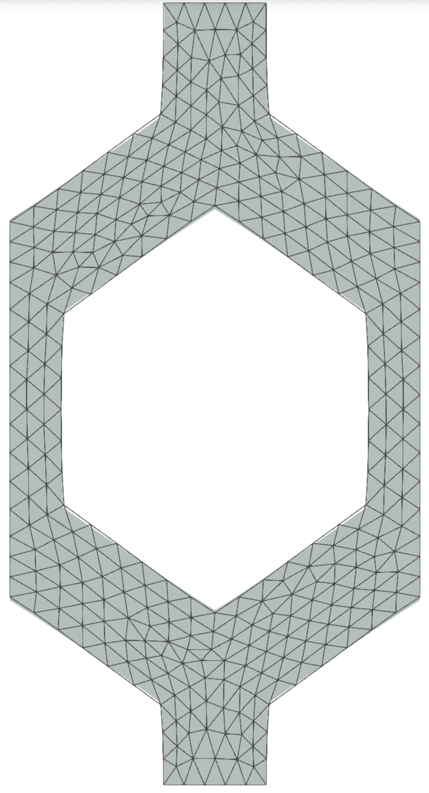
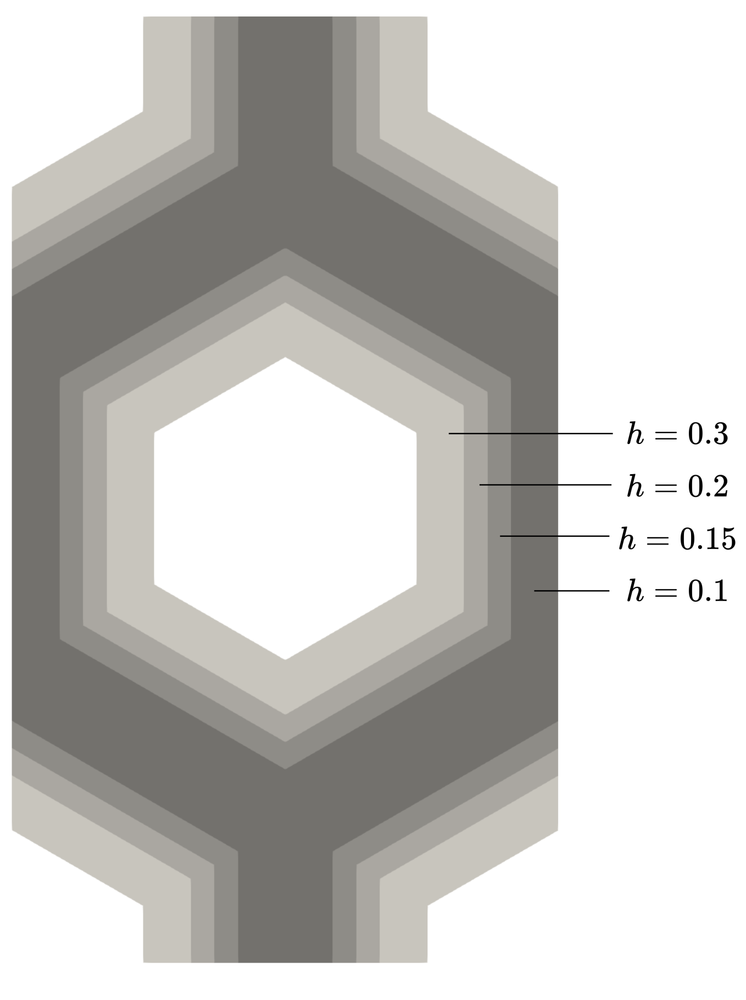
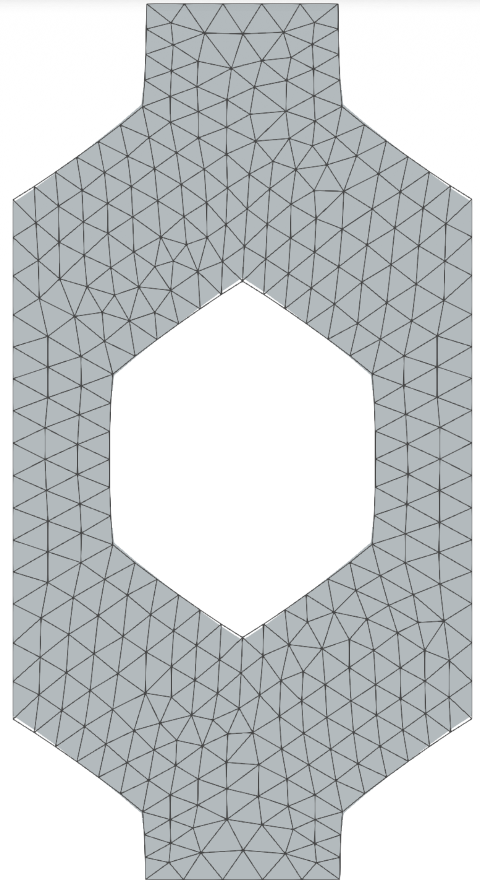
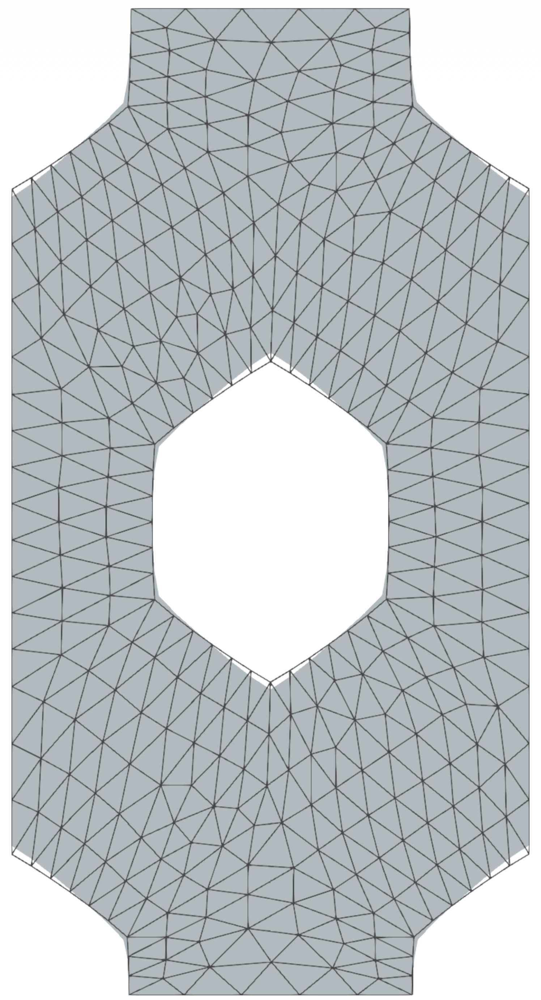
References
II - Patient-specific parametrisation
|
|
Parametrisation of high-dimensional quantities
- Most relevant patient specific quantities a priori lives in high dimension and are not parametrised
- A parametrisation step is required to use a relatively small number of patient-specific parameters
Fibrosed-healthy clustering
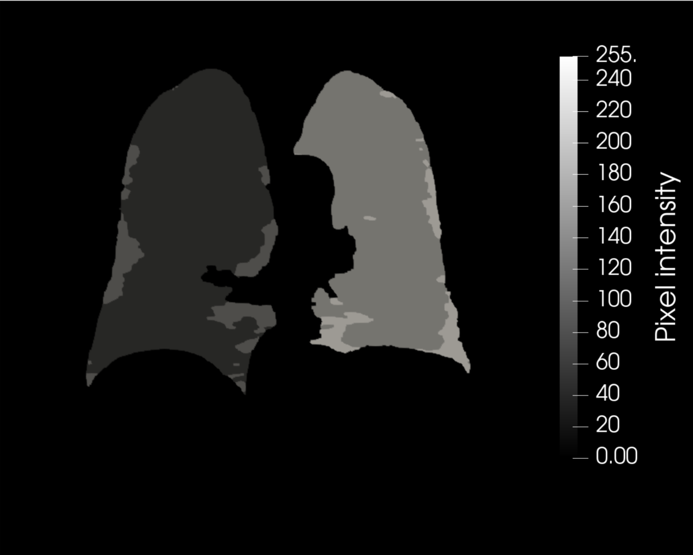
Shapes
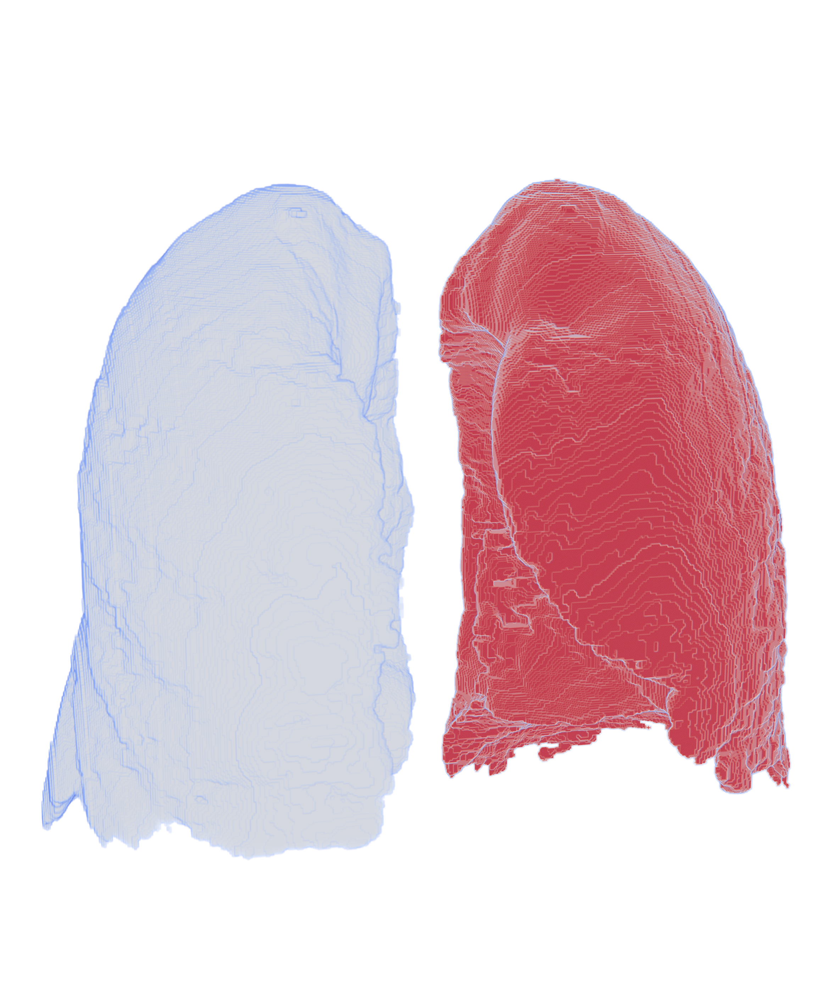
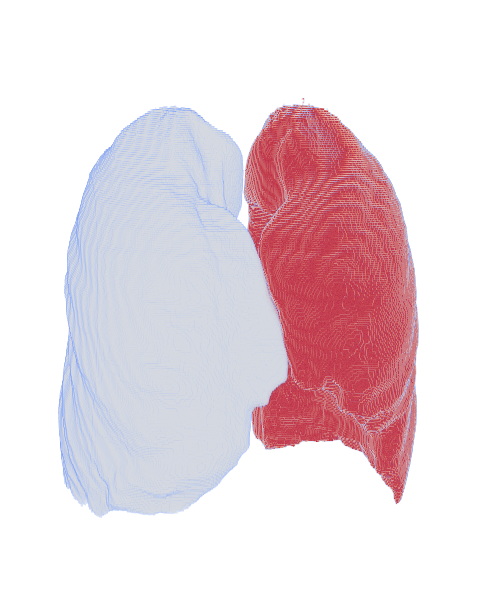
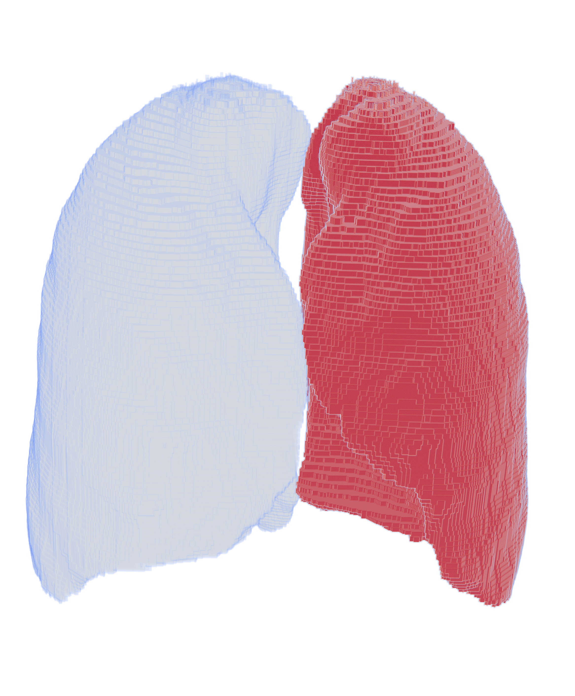
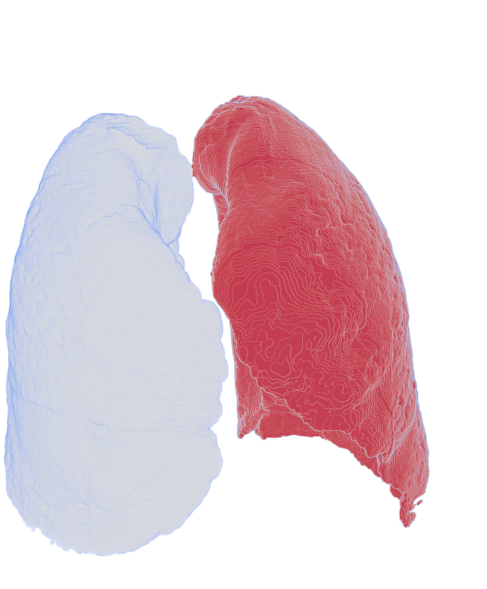
Shape model - registration (Gangl et al., 2021).
Computing the mappings
- The objective is to find the domain \(\omega\) occupied by a given segmented shape in a 3D image
- Which is solution of
\[\omega = \arg \min\underbrace{ \int_{\omega} I\left( x \right) \mathrm{d}\omega}_{\Psi\left(\omega\right)}\]
With requirement that \(I\left( x \right) \begin{cases} < 0 \forall x \in \mathcal{S} \\ > 0 \forall x \not \in \mathcal{S} \end{cases}\), with \(\mathcal{S}\) the image footprint of the shape to be registered
The domain \(\omega\) can be described by mapping \[\Phi\left(X\right) = I_d + u\left(X\right)\] from a reference shape \(\Omega\), leading to \[\int_{\omega} I\left( x \right) \mathrm{d}\omega = \int_{\Omega} I \circ \Phi \left( X \right) J \mathrm{d}\Omega\]
Shape derivatives
- \(D\Psi\left(\omega\right)\left(\boldsymbol{u}^*\right) = \int_{\Omega} \nabla I \cdot u^* J \mathrm{d}\Omega + \underbrace{\int_{\Omega}I \circ \Phi\left(X\right) (F^T)^{-1} : \nabla u^* J \mathrm{d}\Omega}_{\int_{\omega}I\left(x\right) \mathrm{div}\left( u^* \circ \Phi \right) \mathrm{d}\omega}\)
Sobolev gradient (Neuberger, 1985; Neuberger, 1997)
\[D\Psi\left(u\right)\left(v^*\right) = \left(\nabla^H \Psi \left(u\right), v^* \right)_H\]
- Classically:
- \(\left(\boldsymbol{u}, \boldsymbol{v}^* \right)_H := \int_{\omega} \boldsymbol{\nabla_s}\boldsymbol{u}:\boldsymbol{\nabla_s}\boldsymbol{\boldsymbol{v}^*}\mathrm{d}\omega + \alpha \int_{\omega} \boldsymbol{u} \cdot \boldsymbol{v^*}\mathrm{d}\omega\)
Shape model - parametrisation
Encoding the shape of the lung in a low-dimensional space
- In order to feed the surrogate model we need a parametrisation of the lung
- ROM on the shape mappings library

Shape model
- Shape analysis
- Model-order reduction on shapes
- Parametrisation of the shape
- \(\Omega = \Omega\left(\textcolor{LGreenLMS}{\left\{\mu_i\right\}_{i \in \mathopen{~[\!\![~}1, \beta \mathclose{~]\!\!]}}}\right)\)
- SVD
- k-PCA
- Auto-encoder
- Personalising the digital twin